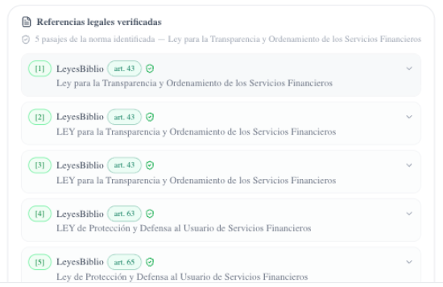
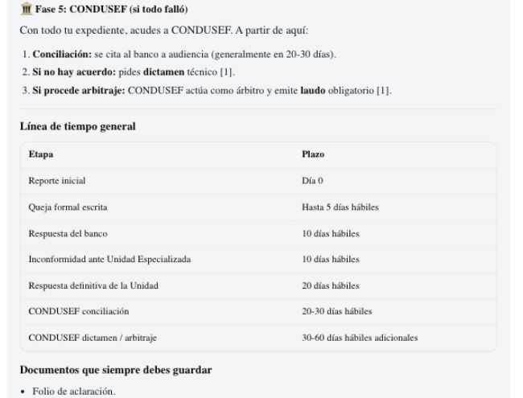

A legal AI platform for citizens and law firms, powered by our own LLM trained on Mexican law.
Every Mexican faces legal moments — rent hikes, wrongful dismissal, unauthorized charges, custody. Almost nobody knows what the law actually says for them, and lawyers are priced for companies, not people.
Federal system + 32 state systems. Consumer, labor, family and civil matters touch every household.
Laws are public but unreadable: technical language, scattered sources, thousands of pages per code.
General AI chatbots answer confidently — and invent articles. In law, a hallucinated citation is worse than no answer.
Chat with Izel in plain language. She builds your case file with you, finds the exact law that protects you, and hands you next steps — every answer cited against the official text.
A collaborative workspace: cases, document vault with version history, deadlines, and Izel as a firm member — reading your files, drafting, executing actions.


Every response carries a references card: law, article number, and the official fragment — expandable, exportable to PDF.
While Izel talks, a second agent searches the corpus inside the identified law and returns the exact articles. No invented citations.
Concrete phases, deadlines and documents to keep — the difference between knowing a right and exercising it.
Global models were trained on U.S. law and translate poorly. We are building Tlamatini — a Mexican legal model trained on the official corpus we harvest daily. Nothing like it exists in the country.
LeyesBiblio, DOF, SJF — harvested and updated automatically, in production today.
Article-level retrieval over the full corpus, served to citizens and firms right now.
State codes and gazettes under collection — the long tail no global model will ever cover.
Continued pre-training of an open-weight model — sovereign, ownable, exportable on-premise.
Listens with empathy, asks the right questions, builds the case file. Streams in seconds, speaks and listens (voice in/out).
Identifies the applicable law, searches inside the law with phrase-aware ranking, returns exact articles while Izel is still answering.
The answer cites law + article, backed by the official fragment. Users expand, export and share the sources.
Citizens consult without giving a name. A recovery phrase — not an identity — owns the case file. LFPDPPP consent, revocable.
Files always belong to the citizen. Sharing works through revocable grants with roles — never through copies.
Conflicts of interest are enforced at the database: a firm member walled out of a case cannot see it exists.
The full stack — app, files, model — runs on our infrastructure today and can run inside a firm's own servers tomorrow.
Unlimited guidance
acquisition engine
Lawyer validation
of their case
Monthly
accompaniment
Per-seat subscription to the Studio workspace — cases, vault, deadlines, Izel as a firm member.
On-prem sovereign license for firms and institutions that cannot leave their files: stack + model, inside their walls.
Citizens arrive free and stay as paying cases; firms pay for the workspace and keep paying for the model underneath it.
Consumer, labor, family, housing — legal need is universal and recurring, and the supply side (quality, affordable guidance) barely exists. Law firms, from solos to the largest despachos, still run on paper and WhatsApp.
First structurally affordable legal guidance, monetized at the moment of real need.
Solos, boutiques and despachos digitizing case management with an AI member that already knows Mexican law.
Sovereign deployment for agencies, universities and legaltech — the model is theirs to run.
Platform live at aijusticia.mx: citizen chat with verified citations, firm Studio, documents, deadlines, invitations, voice — in daily use by a pilot firm.
Continued pre-training of our open-weight legal model on the harvested corpus (billions of tokens). Embeddings over 10.6M chunks to sharpen retrieval.
All 32 state corpora online, voice-first mobile experience, and sovereign on-prem deployments for firms and institutions.
Fabian Romero — founder & engineer, designed and shipped the full platform end to end: product, retrieval, security, infrastructure and the training pipeline. Backed by a founding team driving legal operations and the pilot firms.